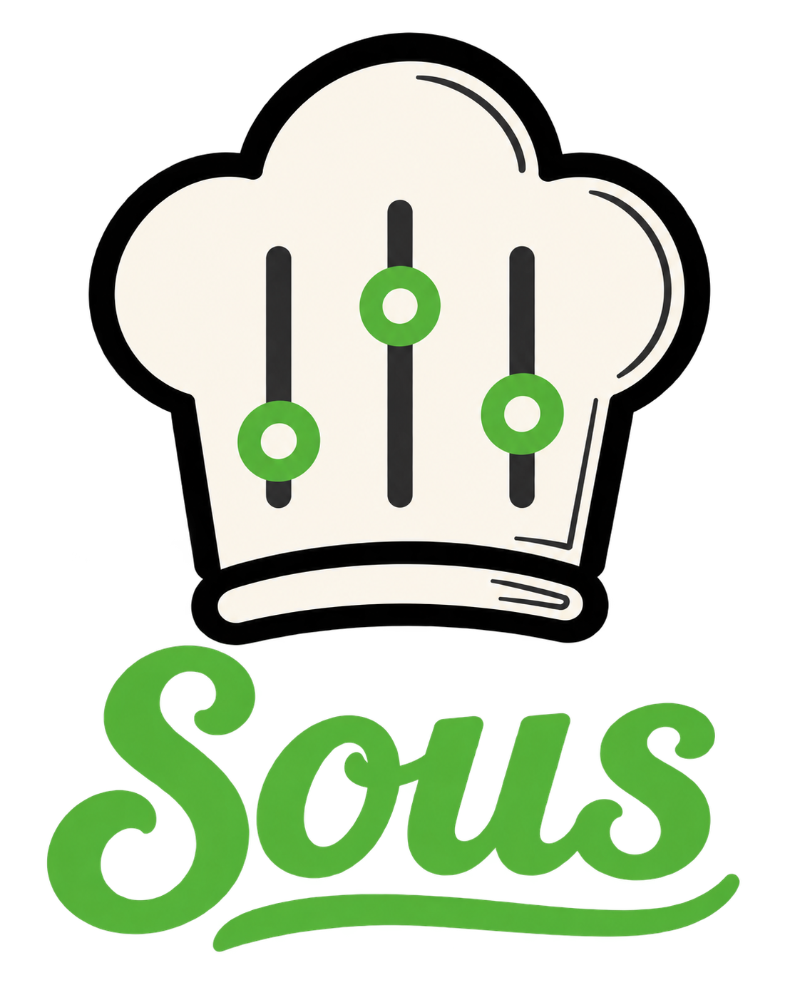

Your coding agent’s assistant
Sous helps you to manage and share AI coding agent configurations across tools, environments, projects, and teams while reducing token usage, mistakes, and wasted time.
$npm install -g @sous-io/sous
The Fundamentals
Two Core Systems.
Config Aggregator
Pull instructions, skills, and context from shared sources into every project and tool that needs them.
Liquid Template Engine
Markdown templates with variables, includes, partials, helper functions, formatters, and live project data; rendered at build time.
It’s a bit like Helm, but for AI coding tools.
Core System #1
The Config Aggregator.
Instructions, skills, and context flow from trusted, shared, repos into your project; one build assembles them all.
Core System #2
The Liquid Template Engine.
One template serves every agent, machine, and project.
---
name: update-data-models
description: Use when adding or changing data models
---
# Update Data Models
Data models can be found in `{{ projectRoot }}/src/models`Embedding absolute paths reduces CWD mistakes that tools often make.
{% if tool == "claude-code" %}
Apply changes with the Edit tool.
{% elsif tool == "codex" %}
Apply changes with apply_patch.
{% endif %}Providing tool-specific instructions increases consistency by reducing ambiguity.
## The Data Models
{% globDirectory dir="{{ projectRoot }}/src/models" pattern="**/*Model.ts" %}Using helpers to generate content keeps your project code as the source of truth---
name: update-data-models
description: Use when adding or changing data models
---
# Update Data Models
Data models can be found in `/projects/backend/src/models`.
Apply changes with the Edit tool.
## The Data Models
- /projects/backend/src/models/UserModel.ts
- /projects/backend/src/models/OrderModel.ts
- /projects/backend/src/models/billing/PaymentModel.tsAbsolute paths, sourced from the project, never stale. This will save your agent dozens of steps in every relevant session.The Motivation
But, Why?
Sous fills a few gaps that AI coding harnesses don’t, and likely won’t, because those problems scale across multiple providers.
Let’s take a look at a few of them …
Tool configs have a reusability problem.
Skills and other instructions unavoidably collect developer-, environment-, project-, team-, and tool-specific information.
Try to reuse them anywhere and they immediately fork and start diverging in their new context. Once those forks have lived in the wild for a while, sharing improvements across them is nearly impossible.
Same skill, different everything.
Two of the same skill’s forks, six weeks on: machine, project, and tool differences have burrowed in, and neither copy can absorb the other’s fixes.
# Deploy Helper
Repo lives in
/Users/alice/dev/api
Use the Edit tool.# Deploy Helper
Repo lives in
/home/bob/proj/webapp
Use apply_patch.# Write Code
Write code good.
Make it look like the other stuff we wrote, but better.Making instruction files generic and abstract basically merges them into the system prompt. They become vague suggestions that the agent will often ignore, or worse, leave gaps it fills with the wrong decisions.
Variables carry the differences.
Everything that made the file unportable, the developer paths, the project quirks, the tool dialect, moves out into variables. Sous injects the right values at build time, so one set of templates serves every combination.
The template asks; the context answers.
Alice’s build fills in her machine, her project, and her tool; Bob’s fills in his. The shared file never needs a personal edit, and the team still collaborates on it.
# Deploy Helper
Repo lives in
{{ devRoot }}/{{ project }}
{% if tool == "claude" %}
Use the Edit tool.
{% else %}
Use apply_patch.
{% endif %}# .env.local
DEV_ROOT=/Users/alice/dev
# sous.config.js
project: "api"
tool: "claude"Nothing else fills this gap.
AI Coding Agents
AI coding harnesses like Claude Code and Codex only consume static files. There is no variable layer, and adding a full templating system would push those tools far out of scope.
Similar Tools
Other skill installers and marketplaces distribute files as-is; they copy well, but nothing customizes per developer or machine.
Discipline
You can keep a few forks in sync by hand for a while. Then one copy takes a tweak the others never hear about, and nobody notices until an agent acts on the stale one.
Wasted tokens buy you a distracted agent.
Verbose instructions used to force compaction; bigger limits just traded it for inattention.
Worse, agents burn context re-running the same discovery commands, directory listings and file searches, every single session.
Paying for the same answers.
The instructions tell the agent to go find out; it obeys, and the output lands in context, session after session.
# Explore The Project
Run these first:
git branch --show-current
find src -name "*.ts"
ls -R src/models$ git branch
$ find src -name "*.ts"
$ ls -R src/models
# 3 round trips and
# ~1,400 tokens spent
# before any workThe build pays, once.
Helpers run at build time and embed exactly the information the agent needs; the session starts with the answers already in hand.
Bake it in at build time.
Two helper lines replace three commands and their output; what reaches the agent is only the part it needed.
# Explore The Project
The current branch is {{ gitBranch }}.
{% globDirectory dir="src/models" pattern="**/*.ts" %}
<!-- the build renders that into: -->
The current branch is release/2.4.
- src/models/UserModel.ts
- src/models/billing/PaymentModel.tsNothing else fills this gap.
AI Coding Agents
Caching and compaction make a big context cheaper to carry, not smaller. Coding harnesses do not pre-compute anything about your project before a session starts, so the agent goes and rediscovers the same facts every time.
Callable Scripts
A script can gather the same facts, but the agent burns a turn running it and the whole output lands in context anyway. Sous puts in just the part that mattered.
Discipline
Nobody sits down and re-optimizes their context by hand at the start of a session. Trim it by feel and you tend to cut the one thing the agent actually needed.
A written list is wrong within a week.
Let an agent help you build a skill and it will embed lists: entities, models, endpoints. It's the default move; you literally have to stop it.
And every one of those lists starts rotting the moment it's written. The code keeps moving; the list stays put.
Two sources; one is wrong.
The list was correct the day it was written. The project moved on without it, and the agent still trusts the file.
## The Entities
- UserEntity.ts
- OrderEntity.ts
- ProductEntity.ts
# last touched in
# MarchUserEntity.ts
OrderEntity.ts
billing/InvoiceEntity.ts
payments/PayoutEntity.ts
# two new, one gone,
# nobody told the skillThe code is the source of truth.
Helpers read the project on every build, so every document that mentions the list gets today’s version of it.
One line instead of a list.
The helper replaces the hand-written list; the instructions can’t drift from the code, because they are built from it.
## The Entities
{% globDirectory dir="src/entities" pattern="**/*Entity.ts" %}
<!-- every build renders the current list -->
- src/entities/UserEntity.ts
- src/entities/OrderEntity.ts
- src/entities/billing/InvoiceEntity.ts
- src/entities/payments/PayoutEntity.tsNothing else fills this gap.
AI Coding Agents
An agent will happily write the list for you, once. Nothing re-reads your project afterward and rewrites it; coding harnesses do not inject live project data into your instruction files, so the snapshot starts rotting the day it lands.
Callable Scripts
A script can print the current list, but that is another round trip and a decision the agent can get wrong or skip; meanwhile the stale list is still sitting in the file, reading like the truth. Sous just renders the fresh list into the file itself.
Discipline
A hand-maintained list will go stale. Nobody remembers to update the instructions in the same commit that adds an entity, and nothing in the file warns the next reader that it is out of date.
Agents spend their first minutes relearning the obvious.
Every command an agent runs to gather information is a round trip: run, read, think, repeat.
And it’s not just session start; most tasks begin the same way. A huge share of an agent’s time goes to relearning the basics instead of doing the work.
The first minute is round trips.
Run, read, think, repeat. Each step waits on the last, and none of them changes any code.
$ ls -R src
$ cat package.json
$ git branch --show-current
$ rg "Entity" src
$ cat src/entities/UserEntity.ts
# five round trips, one after another
# not one line of code changed yetDelegate all the way down.
You already delegate down this ladder; smaller models run faster and cost less. For work that needs zero reasoning, keep going: plain code costs nothing, answers in milliseconds, and that is exactly what a Sous helper is.
Context like that is good in a memory file and better in a skill, where it lands exactly when needed: an agent about to edit an API client loads the api-clients skill and finds the path and a description of every client already there; zero steps wasted.
Write the helper yourself.
Say you want every model listed with a description. The team adds
one rule: every model file’s doc block carries an
@summary. Your own helper globs the directory, reads
each summary, and renders the list before the session even starts.
/**
* @summary Carts and
* their totals at
* checkout.
*/
export class CartModel {
...
}## Our models
{% fileSummaries
dir="src/models"
pattern="**/*Model.ts"
%}
<!-- build renders: -->
- src/models/CartModel.ts
Carts and their totals
at checkout.
- src/models/UserModel.ts
Accounts and identity.Nothing else fills this gap.
AI Coding Agents
Parallel tool calls and faster models make round trips cheaper, not unnecessary. The agent still has to ask before it knows, and no coding harness hands it the answers up front.
Callable Scripts
Writing scripts and telling the agent how to use them works, but every call is still a round trip and a decision it can get wrong. Sous saves that step, and its helpers can be cross-platform and as sophisticated as you want them to be.
Discipline
You can tell an agent to stop exploring, and it will. Then it guesses, because you took away the only way it had to find out.
The same fact lives in five files.
Per-directory docs are one of the best features of modern coding agents; a CLAUDE.md or AGENTS.md can sit right next to the code it describes. So you end up with a lot of them.
Facts repeat: briefly in the central docs, fully next to the thing itself. When the thing changes you update one copy, never all of them, and the rest start drifting.
You updated one of them.
The billing job changed in May. The doc next to the code got the update; the root doc is still confidently wrong.
## Billing
Invoices generate
nightly at 02:00.
<!-- written in March;
nobody came back -->## Invoices
Invoices generate
hourly, on the hour.
<!-- updated in May,
with the code -->One source; every copy current.
Centralize each fact in one source file. Includes and templates compose it into every doc that mentions it, and one build writes the result to every destination.
When the fact changes, you edit one file; the next build updates every copy at once.
Include it once; ship it everywhere.
It is the same @-import format Claude Code already reads, except Sous resolves it at build time with variables in the path; the outputs list then writes one render to as many files as you want.
# Acme API
## Billing
@${docsRoot}/billing.md
<!-- src/billing's doc
includes it too -->outputs: [
{ destinationFile:
"CLAUDE.md" },
{ destinationFile:
"AGENTS.md" },
{ destinationFile:
"src/api/CLAUDE.md" },
]
// one render, three
// identical filesNothing else fills this gap.
AI Coding Agents
Agents read nested docs wonderfully; that is the whole appeal. But nothing maintains them: no harness propagates shared content from one doc file into another, and none of them treats your docs as something to compile.
Similar Tools
Other skill installers and marketplaces move files between machines, one file to one place. Nothing composes a single source into many destinations, so every copy is still its own problem.
Discipline
Updating every copy of a fact in the same commit is exactly the thing people reliably fail to do. You remember the doc next to the change, usually, and find the others months later.
What is Sous?
Write once. Serve every agent.
Sous is a CLI, xcv, that compiles markdown templates into the
prompts, skills, and context files your AI coding tools expect.
Claude Code, Codex, CI bots: same sources, and each tool gets its own plate.
The problems
Agent configs don’t share well.
Sharing forks
Share an instruction file with a teammate and it gets tweaked; parity is gone.
Projects start over
Skills get copied between projects, improved in one, and never synced back.
Tool switches hurt
Claude Code to Codex and back; every switch means converting everything.
Context rots
Hand-written lists go stale, and verbose instructions burn tokens and attention.
How Sous helps
Templates + variables + one build.
Variables live outside
Developer- and machine-specific values stay out of the templates, so one set of files serves the whole team.
One skill, many projects
Project-level variables make the same instruction files versatile enough to reuse anywhere.
Fresh, dynamic context
Helpers embed live data straight from your project; no stale lists, fewer wasted tokens, faster agents.
Any tool, one command
xcv build renders everything for virtually any agent, tool, or service.
Augment; don’t compete.
Sous is there to augment your agents, not to replace anything they already do well.
When a tool can do something natively, do it natively. Sous will make every effort to stay off the toes of your other tools.
Fill the collective gaps.
Sous actively tries to avoid competing with any tool, and especially tries to avoid competing with any class of tools.
Instead, Sous tries to fill the collective gaps that most or all tools either can’t or won’t fill.
Be a tool, not a framework.
Sous avoids forcing opinions on your team; build your own systems and comforts.
Beyond a few core skills that teach agents how to work with Sous itself, everything built in is opt-in only; and even that core can be opted out of.
Be easy to enter.
Sous can copy plain files just like it renders templates. You can still use plain skills and implement the templating features at your own pace.
Marketplaces and skill installers still work, too; just point them
at any of your Sous repos, including the project repo inside of
your project’s .sous directory.
Be easy to exit.
Want to stop using Sous? Commit the configs it built and delete
.sous. That is the whole exit.
We know you’ll miss it ;) but Sous will never lock you in.